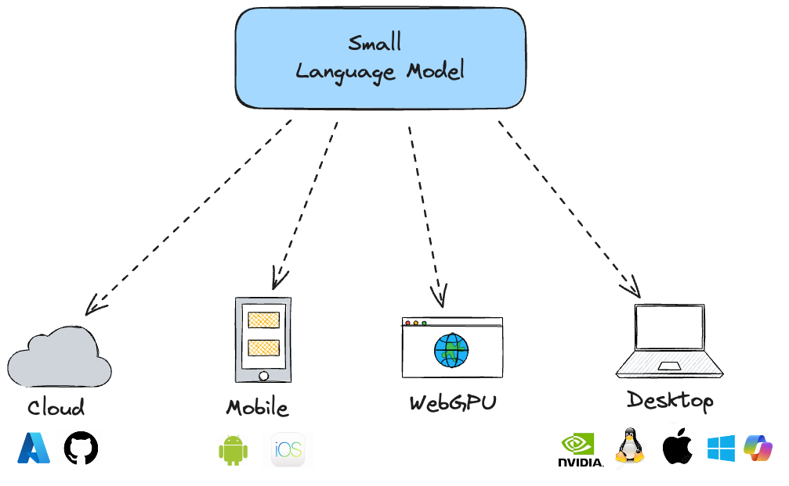
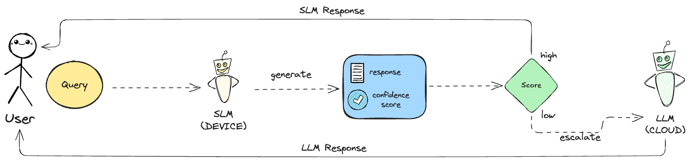
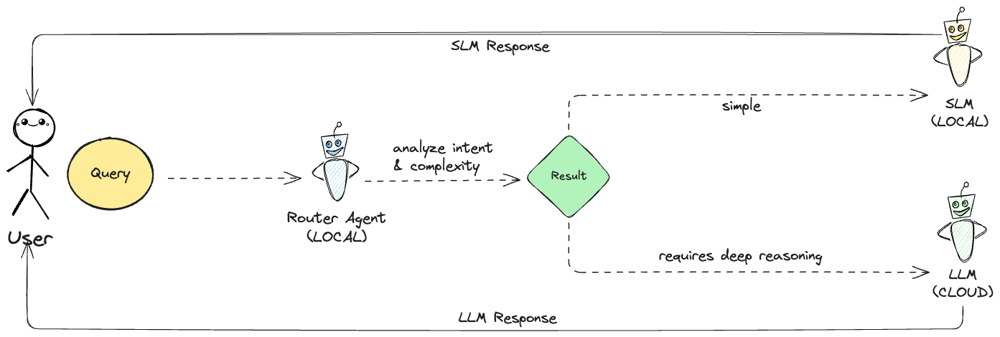
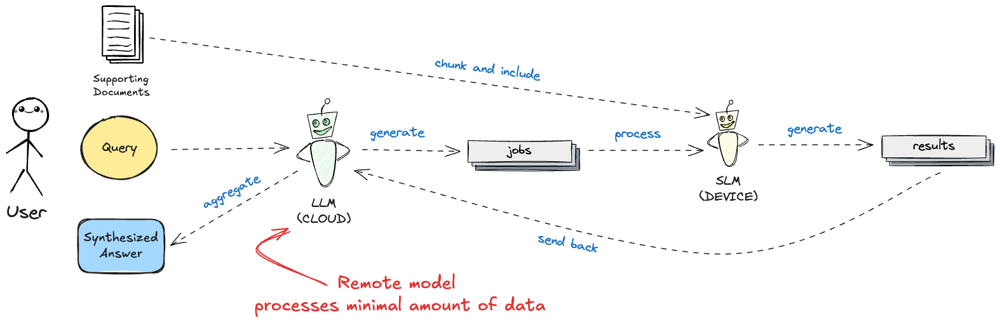
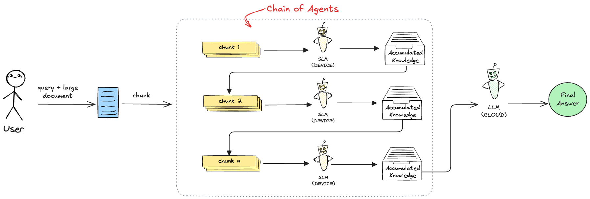
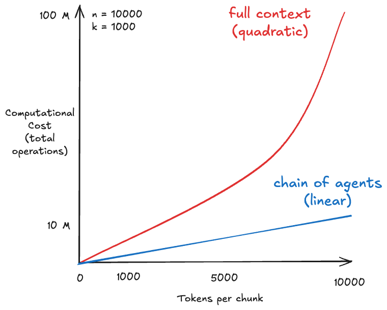
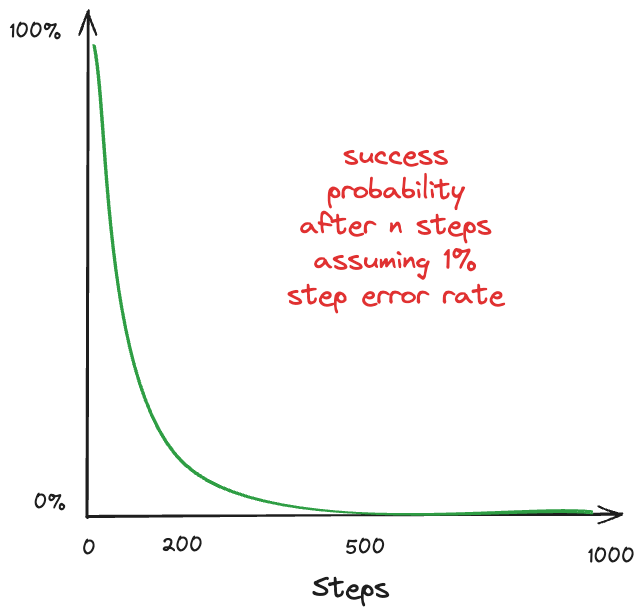
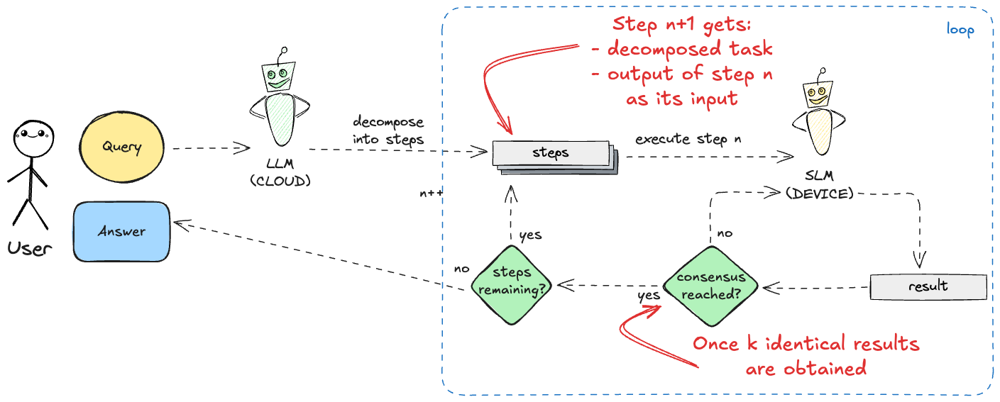

strathweb.com • @filipw.strathweb.com • github.com/filipw • Filip W
The "bigger" is no longer "better". Specialized SLMs now match frontier models on specific agentic tasks, and the bottleneck is orchestration and I/O - not raw intelligence.¹
¹ Sharma & Mehta, "Small Language Models for Agentic Systems", arXiv:2510.03847 (2025)
| Model / Framework | Size | Platform | Strengths |
|---|---|---|---|
| Gemini Nano 4 (Android AICore) | E2B & E4B | Android | System-level intent routing, native multimodal (OCR/Audio) |
| Apple Intelligence | ~3B | iOS/macOS | Semantic indexing, deep app-intent integration |
| Phi-4-mini | 3.8B | open | Function calling, advanced logic and math reasoning |
| Qwen 3.5 | 0.6B-8B | open | Lightweight multimodal, vast multilingual support, coding |
| Llama 4 (Scout Slim) | 1B-17B | open | Native multimodality, image/text understanding, tool use |
| Ministral | 3B-8B | open | Edge optimized, 128K context, sliding-window attention |
| DeepSeek-R1-Distill | 1.5B-8B | open | Reasoning via distillation, agent workflow optimization |

SLMs can ran on a wide range of host runtimes
Which powerful cloud model should I use?
How do I orchestrate the right model for the right task?
| # | Pattern | Description | Paper |
|---|---|---|---|
| 1 | SLM-Default, LLM-Fallback | reactive cascade with confidence gate | arXiv:2510.03847 |
| 2 | Predictive Router (RouteLLM) | route before generation | arXiv:2406.18665 |
| 3 | Minions | decompose document, execute locally, synthesize in cloud | arXiv:2502.15964 |
| 4 | Chain of Agents | sequential reasoning across document segments | arXiv:2406.02818 |
| 5 | MAKER | massively decomposed processes with error correction | arXiv:2511.09030 |
Route cheap, escalate smart
Sharma & Mehta, "Small Language Models for Agentic Systems", arXiv:2510.03847
The query is handled by the SLM first. If it fails to generate a viable answer (e.g, due to complexity or low confidence), the system safely falls back to a more capable, remote LLM to fulfill the request.

Sharma & Mehta, "Small Language Models for Agentic Systems", arXiv:2510.03847
But how do we know when the SLM's answer
Decide before you generate
Ong et al., RouteLLM, arXiv:2406.18665, ICLR 2025
The router's responsibility is intent classification and complexity assessment. It dynamically routes it to either a local worker or a remote worker based on predefined rules.

| Cascade - Reactive | Router - Proactive | |
|---|---|---|
| Strategy | Generate, then evaluate | Predict, then route |
| When routing? | After SLM responds | Before any generation |
| SLM always runs? | Yes (even for hard queries) | No - skipped if predicted hard |
| Training required? | No - works zero-shot | Yes - router trained on preference data |
You do not need a large model to make a
¹ Ong et al., "RouteLLM: Learning to Route LLMs with Preference Data", arXiv:2406.18665, ICLR 2025
Divide the document. Conquer locally. Synthesize in the cloud.
Narayan et al., "Minions: Cost-efficient Collaboration Between On-device and Cloud Language Models", arXiv:2502.15964 (2025)
📄 Huge document → ☁️ cloud LLM → 💸 high cost
📄 Huge document → 💻 local SLM → ⚠️ hallucination
Narayan et al., "Minions: Cost-efficient Collaboration Between On-device and Cloud Language Models", arXiv:2502.15964 (2025)
The approach reduces costs by having a powerful remote LLM decompose a task into simpler subtasks that a local SLM executes.

Each SLM handles only a single-step instruction on a short chunk. No long-context pressure, and parallelism is free.
"Minions with an 8B local LM can recover 97.9% of remote-only performance at 18% of the cloud cost"
Narayan et al., "Minions: Cost-efficient Collaboration Between On-device and Cloud Language Models", arXiv:2502.15964 (2025)
Sequential reasoning across document segments
Zhang et al., "Chain of Agents: LLMs Collaborating on Long-Context Tasks", arXiv:2406.02818 (2024)
Small models process chunks sequentially, passing an accumulated knowledge. A powerful model synthesizes the final answer from the combined knowledge.


¹ Zhang et al., "Chain of Agents: LLMs Collaborating on Long-Context Tasks", arXiv:2406.02818 (2024)
| Approach | Problem | CoA Advantage |
|---|---|---|
| RAG | Retrieval misses critical context | Sequential scan = 100% document coverage |
| Full-Context | Token cost scales quadratically | Linear-like scaling reduces cost |
| Truncation | Drops potentially critical content | Nothing is discarded (solves the "lost-in-the-middle" problem) |
Zhang et al., "Chain of Agents: LLMs Collaborating on Long-Context Tasks", arXiv:2406.02818 (2024)
A million steps. Zero errors.
Meyerson et al., arXiv:2511.09030
Even a 1% per-step error rate compounds fast:

Maximal Agentic decomposition, first-to-ahead-by-K Error correction, and Red-flagging
The paper shows that the cost of solving a massive task scales log-linearly ($\Theta(s \ln s)$) with the number of steps ($s$).
This means we don't have to wait for LLMs to get inherently smarter to solve complex problems; we can achieve "superintelligence" by splitting the problem into micro pieces and heavily correcting the errors along the way.
¹Meyerson et al., "Solving a Million-Step LLM Task with Zero Errors", arXiv:2511.09030 (2025)
Extreme decomposition of a task into tiny subtasks for microagents, combined with a voting scheme to catch errors at every single step.

Meyerson et al., "Solving a Million-Step LLM Task with Zero Errors", arXiv:2511.09030 (2025)
Reliability emerges from
not from individual model's intelligence.
| Pattern | Best for | SLM role | LLM role |
|---|---|---|---|
| SLM-Default Fallback | General queries, cost reduction | Default responder | Fallback for hard queries |
| RouteLLM | High-volume, predictable traffic | Simple queries only | Complex queries only |
| Minions | Large document Q&A | Chunk executor | Job writer + aggregator |
| Chain of Agents | Sequential document tasks | Sequential workers | Final synthesizer |
| MAKER | High-reliability long tasks | Micro-task executors | Orchestrator + arbitrator |